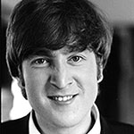

JOHN
LENNON
Famous for being half of one of the
best song-writing duos in music history: Lennon-McCartney.
An artist who taught the world to
give peace a chance.
Famous for being half of one of the
best song-writing duos in music history: Lennon-McCartney.
An artist who taught the world to
give peace a chance.
A legendary drummer in his
own right, the band never missed a beat
without him. He is also unique for constantly
promoting peace and love.
The one and only "Macca" still
leads a highly successful solo career
to this day. This lefty bassist is also
the other half the famous the Lennon-McCartney duo.
Starting out in the shadow of
Lennon-McCartney, but later emerged as an exceptional
songwriter who expressed his newfound sprituality.
A.K.A. the "5th Beatles"
Epstein first attended one of The Beatles' Cavern Club concerts (they were still unknown at the time) and went by his intuition to invest in them. He was successful in persuading George Martin to sign the Beatles at EMI.
Martin has received continuous critical acclaim in the music industry for his involvement in all of the Beatles' original albums and was a key figure in the recording companies: EMI, Parlophone, and Apple. He has also scored films such as 'A Hard Day's Night', 'Yellow Submarine' and 'Live and Let Die'.
He first met John Lennon at the Liverpool College of Art and they were both credited with naming the band 'The Beetles' after another band called the Crickets. Stuart briefly toured with the group in Germany, but left in 1961 after being granted an art scholarship.
In 1960, Pete was first discovered by McCartney at The Casbah Coffee Club in Liverpool and invited to join the band in Hamburg since they had no drummer at the time. Two years later, the band dismissed him. He has since worked as a civil servant and formed his own group, the Pete Best Band.